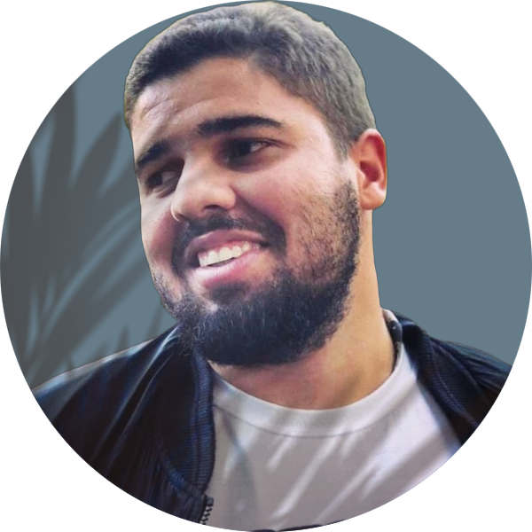

<div class="container">     
    <div class="row">
        <!-- sobre mim -->
        <div class="col-lg shadow border m-1 custom-box">
            <div class="text-center">
                <h2>Sobre Mim</h2> 
                                
            </div>
                <p>Concluinte em Engenharia da Computação pela Universidade Federal da Bahia, Desenvolvedor Back-End com foco em .NET/C# há 3 anos, Programador/Designer de jogos Unity há 5 anos e 1 ano de experiência como Analista de Qualidade de Software e automatização de testes.</p>

                <p>Em minha última oportunidade desenvolvi um sistema que automatizou a coleta de informações dos clientes, o que acelerou os processos de implatação. Desenvolvi o jogo de computador e mobile Spaceship for Newbies com colegas da faculdade na Molotov Estúdios, disponível nas plataformas Steam e Play Store.</p>

                <p>Atualmente estou estudando AWS e DevOps.</p>
        </div>
        <!-- Projetos apresentados -->
        <div class="col-lg shadow border m-1 custom-box">
            <div class="text-center">
                <h2>Projeto em Destaque</h2>
                <h4>{{featuredProject.name}}</h4>
            </div>       
            
            <carousel>
                <div *ngFor="let picture of featuredProject.pictures">
                    <slide></slide>
                </div>
            </carousel>
            <p class="mt-2">{{featuredProject.summary}}</p>
            <p>Visite a seção de Portfolio para ler mais!</p>
        </div>
    </div>
</div>
